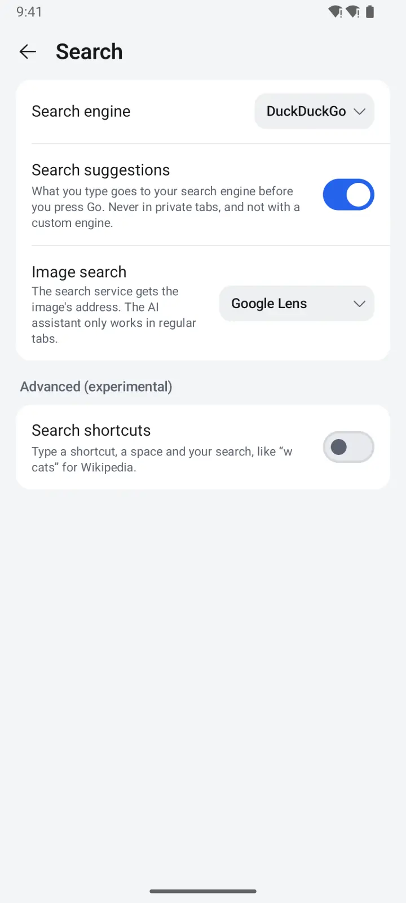
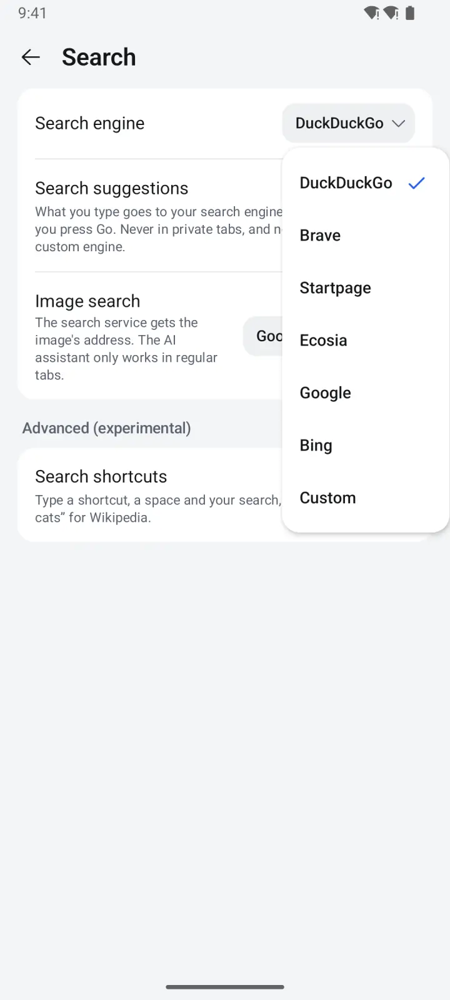
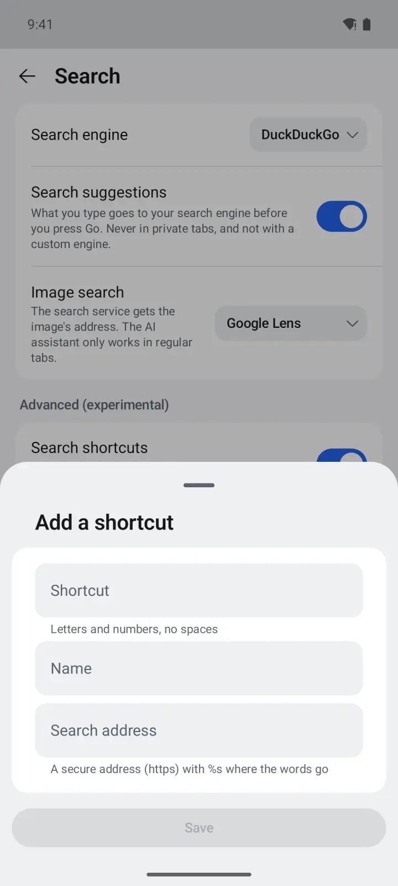

Change your search engine, and search one site directly
How-to
Choose a search engine for the address bar, turn search suggestions on or off, and add shortcuts for searching individual sites straight from the address bar.
Open the ⋮ menu, then Settings > Search.

Search engine
Tap Search engine and pick DuckDuckGo (the one Wayward starts with), Brave, Startpage, Ecosia, Google or Bing.
To use another one, pick Custom and fill in Search address: the engine's address for a search, with %s where the words go. It has to start with https://. Until it's set, searches use DuckDuckGo.
The assistant always searches with DuckDuckGo, whatever you pick here.

Search suggestions
With Search suggestions on, your search engine suggests searches as you type in the address bar. That means what you type goes to the engine before you press Go. They never come in private tabs, and not with a custom engine.
Image search
Image search is what "Search image with" uses when you hold a picture on a page: Google Lens, Bing Visual Search, TinEye, or AI assistant. The search service gets the picture's address, not the page you were on. The assistant only works in regular tabs, and it's only in the list while the assistant is on the bar.
Search shortcuts
A search shortcut is a short word that searches one site. Type it in the address bar, then a space and your search, and the first suggestion becomes "Search" and the site's name.
- Under Advanced (experimental), turn on Search shortcuts.
- Tap Add a shortcut.
- Fill in Shortcut (letters and numbers, no spaces), Name, and Search address (a secure https address with %s where the words go).
- Tap Save.
To change or delete one, tap it in the list: Edit shortcut opens, with Delete.

Example: with a shortcut "r" for a recipe site, typing "r pancakes" searches that site for pancakes.
More in Browsing
- Search, keep a few tabs open, and find your way home
- Search or go to an address
- Copy, paste or share a page's address
- Scan a QR code
- Open, find and close tabs
- Pin, rename or pick several tabs
- Group your tabs
- Use the start page
- Find words on a page
- Translate a page
- Read an article without the clutter
- Desktop site, zoom, print and save as PDF
- Hold a link, picture or video for more
- When a page asks you something
- Find a page in your history, or clear it
- Bookmarks, folders, import and export
- Links from other apps, and link previews
- The widget and home-screen shortcuts
- Sign in with your password manager